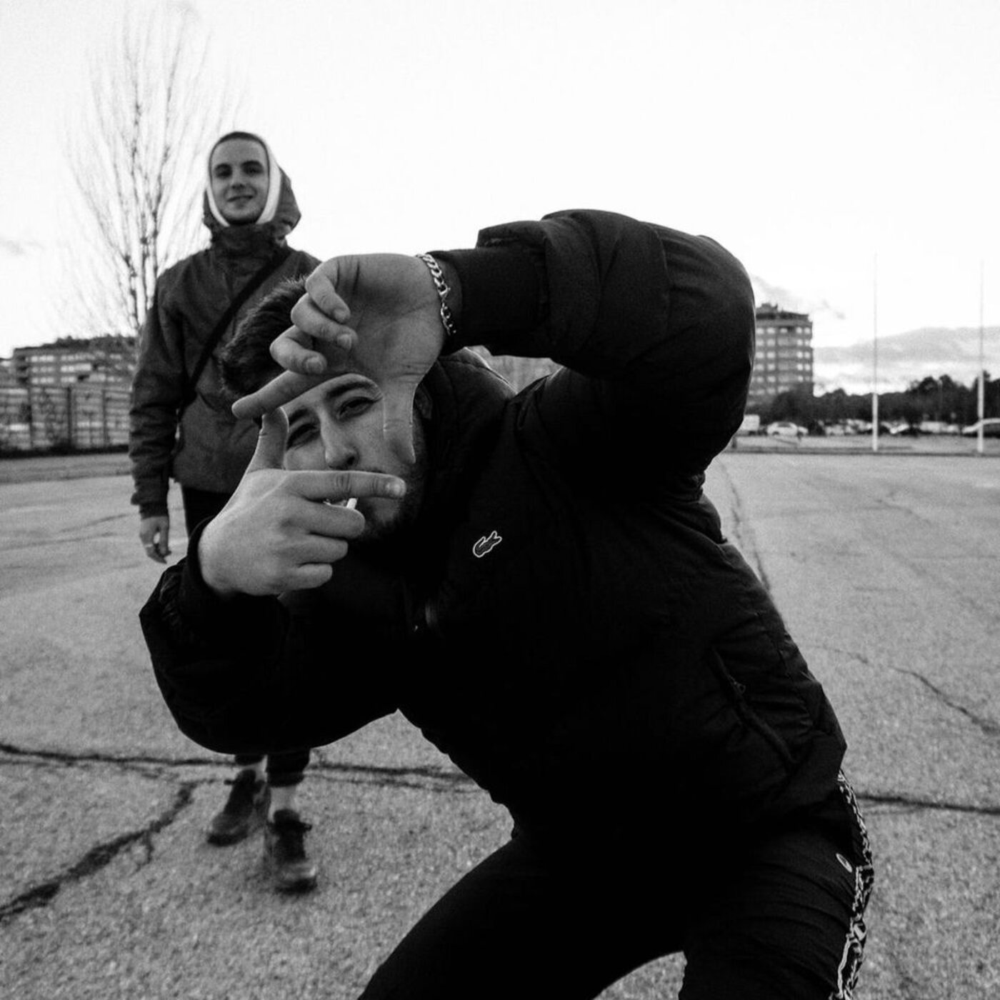
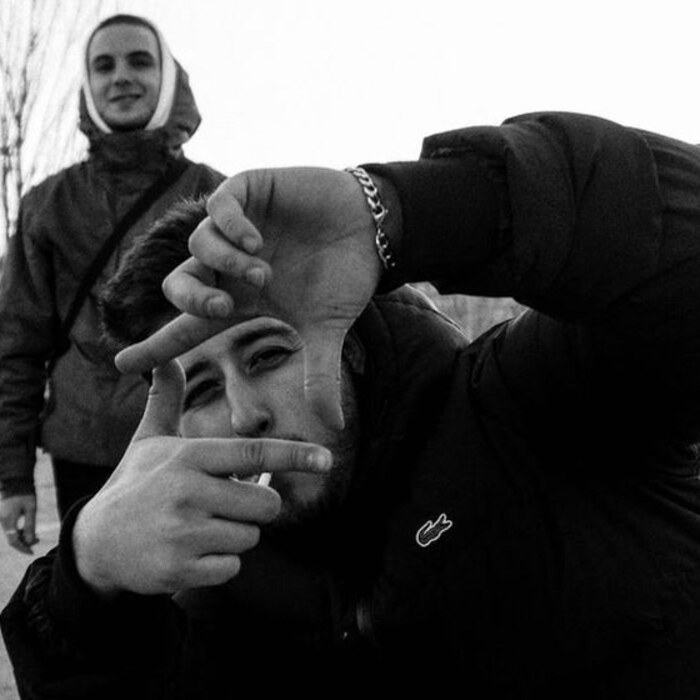
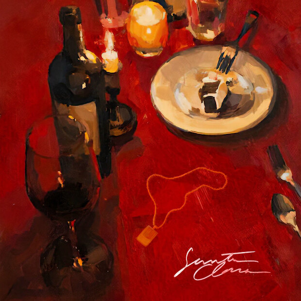
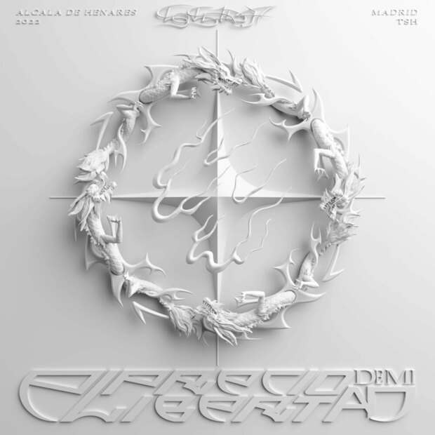
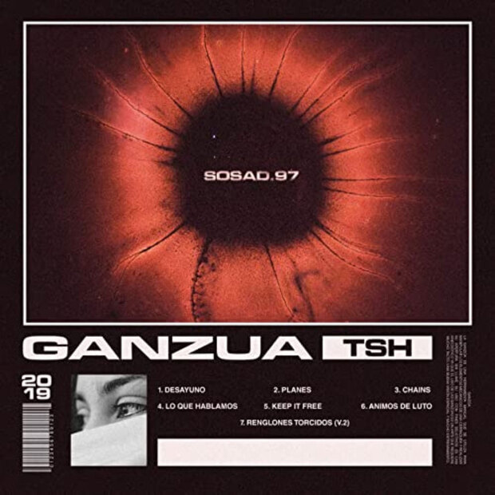

Lleva publicando desde 2019 sin hacer ruido y ya son 59 lanzamientos: dos discos, un EP, más de cincuenta singles y un directo que se ha ganado a base de verdad.


David Fuertes Pliego, Sosad.97 para la música. Rapero madrileño que empezó publicando en 2019 con «Ganzúa» y desde entonces ha firmado 59 lanzamientos: dos discos, un EP y más de cincuenta singles.
Su terreno es el rap y el trap de autor. Canciones que hablan de la fe y de la culpa —«Santos de Fe», «Hablando con Dios»—, de lo que cuesta ser libre —«El Precio de Mi Libertad», «Palabra de Pobre»—, de la noche larga —«Cuando Acabe la Noche», «Tentaciones»— y de lo que se queda por el camino —«Huecos», «Llamadas Perdidas».
En 2022 llegó su disco «El Precio de Mi Libertad» y en 2024 el EP «Santa Clara». Su último lanzamiento, «Aquí Estaré», es de septiembre de 2026. En 2025 hizo su primera gira en solitario, el Joven Rey Tour, después de haberse ganado al público en citas como el festival Madrid Salvaje.

Cuatro cortes, doce minutos. Su trabajo más reciente de estudio.

Siete cortes, veinte minutos. El disco que le puso en el mapa.

Donde empezó todo: su primer trabajo largo.
En 2025 salió a la carretera con su primera gira en solitario, después de haberse ganado al público en festivales como el Madrid Salvaje, y llevó el repertorio de «El Precio de Mi Libertad» y «Santa Clara» por salas de toda España.